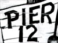
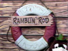
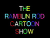
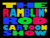

|
|
Popeye's Pier 12/The Ramblin' Rod Cartoon Show KPTV's most popular and longest-running children's show, Ramblin' Rod took over Popeye's Pier 12 from Addie Bobkins, and lasted more than three decades, most likely the longest run for a single host of a children's program in the United States. Because of the long run of this show, the information is divided over four decades:  1964 - 1969  1970 - 1979  1980 - 1989  1990 - 1997
This
page
last
updated
on
August 24, 2025
|
|


|
Yesterday's KPTV Website design and content ©2003-2025 by Ron Dunevant, LLC unless otherwise noted. |